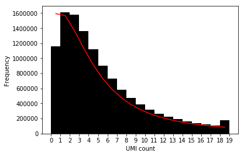
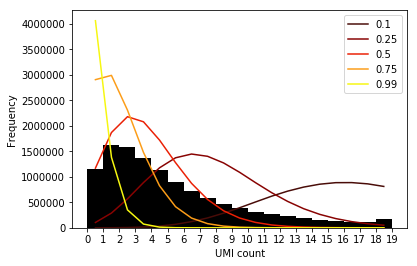
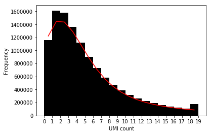
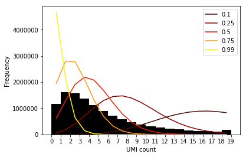

Mean/dispersion estimation
Table of Contents
Introduction
The simplest approach to call mean/variance QTLs is to estimate a mean and a dispersion for each individual, treat them as continuous phenotypes, and plug into standard QTL mapping software.
As a first pass, perform stringent QC to avoid the sparsest genes and simply find maximum likelihood estimates of a negative binomial model for the mean, and dispersion per individual per gene.
Model specification
Let \(r_{ijk}\) denote the number of molecules for individual \(i\), cell \(j\), gene \(k\). Let \(R_{ij}\) denote a size factor for each cell. As a first pass, define \(R_{ij} = \sum_k r_{ijk}\).
Following Hilbe 2012, we derive the negative binomial as a Poisson-Gamma mixture:
\[ r_{ijk} \sim \text{Pois}(R_{ij} \mu_{ik} u_{ijk}) \]
\[ u_{ijk} \sim \text{Gamma}(\phi_{ik}^{-1}, \phi_{ik}^{-1}) \]
Here, \(\mu_{ik}u_{ijk}\) denotes relative expression (Pachter 2011). Marginalizing out \(u\) yields the negative binomial distribution, with log likelihood:
\[ \ln p(r_{ijk} \mid R_{ij}, \mu_{ik}, \phi_{ik}) = r_{ijk} \ln\left(\frac{R_{ij}\mu_{ik}\phi_{ik}}{1 + R_{ij}\mu_{ik}\phi_{ik}}\right) - \phi_{ik}^{-1} \ln(1 + R_{ij}\mu_{ik}\phi_{ik}) + \ln \Gamma(r_{ijk} + \phi_{ik}^{-1}) - \ln \Gamma(r_{ijk} + 1) - \ln \Gamma(\phi^{-1}) \]
We have multiple data points (30-200 cells) per mean/dispersion parameter, so simply minimizing the negative log likelihood should give reasonable estimates.
We can additionally account for zero-inflation, by letting \(\pi_{ijk}\) denote the probability of a "technical zero" (i.e., not arising from the negative-binomial). Following prior work, we introduce a dropout parameter for each cell (indexed by \(i\) and \(j\)) and each gene (Lopez et al 2017, Risso et al 2017).
Then, the log-likelihood of the data is:
\[ \ln p(r_{ijk} \mid r_{ijk} = 0, \cdot) = -\ln(\pi_{ijk} + (1 - \pi_{ijk}) \exp(\ln p(r_{ijk} \mid R_{ij}, \mu_{ik}, \phi_{ik}))) \]
\[ \ln p(r_{ijk} \mid r_{ijk} > 0, \cdot) = \ln(1 - \pi_{ijk}) + \ln p(r_{ijk} \mid R_{ij}, \mu_{ik}, \phi_{ik})) \]
Quality control
Filter out cells on percent spike-in and gene detection rate, and filter out genes on individual detection rate. For now, use conservative filters:
- keep cells with % spike-in < 50%
- keep cells with detected genes > 4000
- keep genes detected in >70% of cells
keep_cells = functools.reduce( np.logical_and, [ annotations['reads_ercc'] / annotations.filter(like='reads_', axis=1).agg(np.sum, axis=1) < 0.5, annotations['detect_hs'] > 4000, annotations['chip_id'] != 'NA19092', ]).values keep_genes = functools.reduce( np.logical_and, [ umi.apply(lambda x: x > 0).agg(np.mean, axis=1).apply(lambda x: x > .7), ]).values umi_qc = umi.loc[keep_genes, keep_cells] annotations_qc = annotations.loc[keep_cells] umi_qc.shape
(4148, 3100)
individuals = sorted(annotations_qc['chip_id'].unique()) onehot = np.zeros((umi_qc.shape[1], len(individuals)), dtype=np.float32) onehot[np.arange(onehot.shape[0]),annotations_qc['chip_id'].apply(lambda x: individuals.index(x))] = 1 onehot = pd.DataFrame(onehot, columns=individuals, index=umi_qc.columns) onehot.shape
(3100, 32)
Check that one-hot encoding is OK:
(umi_qc.loc['ENSG00000000003', (annotations_qc['chip_id'] == 'NA18489').values] == umi_qc.loc['ENSG00000000003', onehot.dot(np.eye(onehot.shape[1])[0]).astype(bool)]).all()
True
umi_qc.to_csv('/scratch/midway2/aksarkar/singlecell/umi-qc.txt.gz', sep=' ', compression='gzip')
onehot.to_csv('/scratch/midway2/aksarkar/singlecell/onehot-qc.txt.gz', sep=' ', compression='gzip')
annotations_qc.to_csv('/scratch/midway2/aksarkar/singlecell/annotations-qc.txt.gz', sep=' ', compression='gzip')
Read the data
umi = pd.read_table('/scratch/midway2/aksarkar/singlecell/umi-qc.txt.gz', sep=' ', index_col=0) onehot = pd.read_table('/scratch/midway2/aksarkar/singlecell/onehot-qc.txt.gz', sep=' ', index_col=0) annotations = pd.read_table('/scratch/midway2/aksarkar/singlecell/annotations-qc.txt.gz', sep=' ', index_col=0)
Serial algorithm
Optimize each pair of mean/dispersion parameters by sequentially considering
each subset of the data (set of cells per gene per individual). Use
multiprocessing to parallelize this over chunks of genes.
Optimize the negative log-likelihood using BFGS.
def nll(theta, x, size): mean, inv_disp = np.exp(theta) mean *= size assert mean.shape == x.shape return -(x * np.log(mean / inv_disp + 1e-8) - x * np.log(1 + mean / inv_disp + 1e-8) - inv_disp * np.log(1 + mean / inv_disp + 1e-8) + scipy.special.gammaln(x + inv_disp) - scipy.special.gammaln(inv_disp) - scipy.special.gammaln(x + 1)).sum() def fit_scipy(x, size): res = scipy.optimize.minimize(fun=nll, x0=[0, 0], args=(x, size), tol=1e-4) if res.success: return tuple(res.x) else: return (float('nan'), float('nan')) def process_chunk(x, size): res = pd.DataFrame([(gene, k) + fit_scipy(row.loc[g].values, size.loc[g].values) for gene, row in x.iterrows() for k, g in row.groupby(annotations['chip_id'].values).groups.items()]) res.columns = ['gene', 'individual', 'mean', 'dispersion'] res.set_index('gene', inplace=True) return res
Output record-like data for each parameter to make reassembling the result easier.
process_chunk(umi.iloc[:5], size).head()
individual mean dispersion gene ENSG00000000003 NA18519 -8.223728 2.564775 ENSG00000000003 NA18862 -8.406216 2.263670 ENSG00000000003 NA19093 -8.339645 2.393590 ENSG00000000003 NA19128 -8.479335 2.293822 ENSG00000000003 NA18852 -8.609513 2.454818
Out[90].pivot(columns='individual', values='mean')
individual NA18519 NA18852 NA18862 NA19093 NA19128 gene ENSG00000000003 -8.223728 -8.609513 -8.406216 -8.339645 -8.479335
f = functools.partial(process_chunk, size=umi.agg(np.sum)) with mp.Pool() as pool: result = pd.concat(pool.map(f, np.array_split(umi, 100))) log_mean = result.pivot(columns='individual', values='mean') log_disp = result.pivot(columns='individual', values='dispersion') log_mean.to_csv('/scratch/midway2/aksarkar/singlecell/mean.txt.gz', sep=' ', compression='gzip') log_disp.to_csv('/scratch/midway2/aksarkar/singlecell/disp.txt.gz', sep=' ', compression='gzip')
Parallel algorithm
We optimize all of the parameters together, using one-hot encoding to map parameters to data points. This makes inference more amenable to running on the GPU. Although this is slower for the NB estimation problem, it will be faster for the ZINB estimation problem when parameters are shared between genes and we need to operate on the entire count matrix.
Use tensorflow to automatically differentiate the negative log likelihood and perform gradient descent.
def sigmoid(x): """Numerically safe sigmoid""" return tf.clip_by_value(tf.sigmoid(x), -13, 13) def log(x): """Numerically safe log""" return tf.log(x + 1e-8) def nb_llik(x, mean, inv_disp): """Log likelihood of x distributed as NB See Hilbe 2012, eq. 8.10 mean - mean (> 0) inv_disp - inverse dispersion (> 0) """ return (x * log(mean / inv_disp) - x * log(1 + mean / inv_disp) - inv_disp * log(1 + mean / inv_disp) + tf.lgamma(x + inv_disp) - tf.lgamma(inv_disp) - tf.lgamma(x + 1)) def zinb_llik(x, mean, inv_disp, logodds, eps=1e-8): """Log likelihood of x distributed as ZINB See Hilbe 2012, eq. 11.12, 11.13 mean - mean (> 0) inv_disp - inverse dispersion (> 0) logodds - dropout log odds """ case_zero = -log(sigmoid(-logodds) + sigmoid(logodds) * tf.exp(nb_llik(x, mean, inv_disp))) case_non_zero = -tf.nn.softplus(logodds) + nb_llik(x, mean, inv_disp) return tf.where(tf.less(x, 1e-8), case_zero, case_non_zero) def fit(umi, onehot, size_factor, zero_inflation=False, learning_rate=1e-2, max_epochs=1000): """Return estimated log mean and log dispersion. If fitting a zero-inflated model, additionally return dropout log odds. umi - count matrix (n x p; float32) onehot - mapping of individuals to cells (m x n; float32) size_factor - size factor vector (n x 1; float32) Returns: log_mean - log mean parameter (m x p) log_disp - log dispersion parameter (m x p) dropout - if zero_inflation, dropout log odds (n x p) """ n, p = umi.shape _, m = onehot.shape graph = tf.Graph() with graph.as_default(), graph.device('/gpu:*'): size_factor = tf.Variable(size_factor, trainable=False) umi = tf.Variable(umi, trainable=False) onehot = tf.Variable(onehot, trainable=False) mean = tf.exp(tf.Variable(tf.zeros([m, p]))) inv_disp = tf.exp(tf.Variable(tf.zeros([m, p]))) if zero_inflation: dropout = tf.Variable(tf.zeros([n, p])) llik = tf.reduce_mean( zinb_llik(umi, size_factor * tf.matmul(onehot, mean), tf.matmul(onehot, inv_disp), dropout)) else: llik = tf.reduce_sum( nb_llik(umi, size_factor * tf.matmul(onehot, mean), tf.matmul(onehot, inv_disp))) with graph.device('/cpu:0'): check_op = tf.assert_non_positive(llik) with tf.control_dependencies([check_op]): train = tf.train.AdamOptimizer(learning_rate=learning_rate).minimize(-llik) opt = [tf.log(mean), -tf.log(inv_disp)] if zero_inflation: opt.append(dropout) curr = float('-inf') with tf.Session() as sess: sess.run(tf.global_variables_initializer()) for i in range(max_epochs): _, update = sess.run([train, llik]) if not np.isfinite(update): raise tf.train.NanLossDuringTrainingError if not i % 100: print(i, update) return sess.run(opt)
mean, dispersion = fit( umi=umi.values.T.astype(np.float32), onehot=onehot.values.astype(np.float32), size_factor=umi.agg(np.sum).astype(np.float32).values.reshape(-1, 1), learning_rate=1e-2, max_epochs=8000)
pd.DataFrame(mean.T, index=umi.index, columns=onehot.columns).to_csv('/scratch/midway2/aksarkar/singlecell/mean2.txt.gz', sep=' ', compression='gzip') pd.DataFrame(dispersion.T, index=umi.index, columns=onehot.columns).to_csv('/scratch/midway2/aksarkar/singlecell/dispersion2.txt.gz', sep=' ', compression='gzip')
mean = pd.read_table('/scratch/midway2/aksarkar/singlecell/mean.txt.gz', sep=' ', index_col=0) mean2 = pd.read_table('/scratch/midway2/aksarkar/singlecell/mean2.txt.gz', sep=' ', index_col=0)
Check how close the estimated parameters are.
(np.isclose(mean.values, mean2.values)).all()
False
mask = np.where(np.logical_and(np.isfinite(mean.values), ~np.isclose(mean.values, mean2.values)))
pd.Series(abs(mean.values[mask] - mean2.values[mask])).describe()
count 5685.000000 mean 0.000546 std 0.000889 min 0.000054 25% 0.000165 50% 0.000302 75% 0.000623 max 0.030600 dtype: float64
Visualize the fitted models
The challenge in visualizing the fitted distributions is that the observations \(r_{ijk}\) are not drawn iid. from a distribution \(g_{ik}(\cdot)\).
Instead, we have \(r_{ijk} \sim g_{ijk}(\cdot)\), and we have used maximum likelihood to estimate distributions \(\hat{g}_{ijk}\).
We can use an idea from ashr: Let \(\hat{G}_{ijk}\) denote the CDF of
\(\hat{g}_{ijk}\). Then, the distribution of values
\(\hat{G}_{ijk}(r_{ijk})\) should be uniform.
def estimated_cdf(x, mean, disp, size, onehot): n = onehot.dot(np.exp(-disp.values.T) + 1e-8) p = 1 / (1 + size.to_frame().values * onehot.dot(np.exp(mean.values + disp.values).T)) assert (n.values > 0).all() assert (p.values >= 0).all() assert (p.values <= 1).all() return st.nbinom(n=n, p=p).cdf(x) def diagnostic(umi, mean, disp, size, onehot): q = estimated_cdf(umi.values.T, mean, disp, size, onehot) plt.clf() plt.scatter(x=np.linspace(0, 1, q.shape[0]), y=sorted(q.ravel()), s=0.5) plt.plot([[0, 0], [1, 1]], c='black') plt.title(umi.index[0]) plt.xlabel('Expected quantile') plt.ylabel('Estimated quantile')
Look at a particular gene:
mean = pd.read_table('/scratch/midway2/aksarkar/singlecell/mean2.txt.gz', sep=' ', index_col=0) disp = pd.read_table('/scratch/midway2/aksarkar/singlecell/dispersion2.txt.gz', sep=' ', index_col=0) size = umi.agg(np.sum)
diagnostic(umi.iloc[:1], mean.iloc[:1], disp.iloc[:1], size, onehot)

The estimated quantiles are higher than the expected quantiles, suggesting that the estimated distributions have too much density at lower values. One explanation is that even for this stringent subset of genes, means are biased downwards and dispersions are biased upwards due to zero-inflation. If this were the case, then we should expect to find some genes which depart even more from uniform quantiles.
Look at the quantiles of the QQ plots over all genes:
def diagnostic_quantiles(umi, mean, disp, size, onehot, quantiles=None): if quantiles is None: quantiles = np.array([.1, .25, .5, .75, .99]) else: quantiles = np.array(quantiles) assert (0 <= quantiles <= 1).all() cdf = np.sort(estimated_cdf(umi.values.T, mean, disp, size, onehot).T) cdf_quantiles = np.percentile(cdf, 100 * quantiles, interpolation='higher', axis=0) plt.clf() for q, row in zip(quantiles, cdf_quantiles): plt.scatter(x=np.linspace(0, 1, row.shape[0]), y=row, c=colorcet.cm['kbc'](q), s=.5, label=q) plt.legend() plt.xlabel('Expected quantile') plt.ylabel('Estimated quantile')
diagnostic_quantiles(umi, mean, disp, size, onehot)

We can also compare the histogram of the observed data to the average density \(\bar{g}\):
\[ \bar{g}(x) = \frac{1}{N} \sum_{i,j,k} \hat{g}_{ijk}(x) \]
Following locfdr, we plot the expected number of draws from \(\bar{g}\),
assuming the number of draws in the interval \([a, b]\) is
\(\mathrm{Bin}(N, \bar{G}(b) - \bar{G}(a))\), where \(N\) is the total number
of observations and \(\bar{G}\) is the average CDF:
\[ \bar{G}(x) = \frac{1}{N} \sum_{i,j,k} \hat{G}_{ijk}(x) \]
The data distribution has an extremely long tail, so truncate it to make the majority of the fit easier to see:
query = (pd.Series([50, 75, 90, 95, 99]) .apply(lambda x: np.percentile(umi.values.ravel(), x)) .to_frame() .rename_axis('Percentile', axis='index')) query.columns = ['UMI'] query
UMI Percentile 50 4.0 75 9.0 90 19.0 95 32.0 99 98.0
def expected_counts(umi, mean, disp, size, onehot, grid): data = umi.values.ravel() average_cdf = [np.mean(estimated_cdf(g, mean, disp, size, onehot)) for g in grid] return data.shape[0] * np.diff(average_cdf) def plot_fit(umi, expected_counts, grid): data = umi.values.ravel() plt.clf() plt.hist(data[data <= grid.max()], bins=grid, color='k') plt.plot(grid[1:] - 0.5, expected_counts, c='r') plt.xticks(grid) plt.xlabel('UMI count') plt.ylabel('Frequency')
The model appears to be zero-biased as expected:
grid = np.arange(20) exp_counts = expected_counts(umi, mean, disp, size, onehot, grid)
plot_fit(umi, exp_counts, grid)

We can also visualize the quantiles of \(\bar{g}\):
def predicted_counts(umi, mean, disp, size, onehot, grid, quantiles=None): if quantiles is None: quantiles = [.1, .25, .5, .75, .99] else: quantiles = np.atleast_1d(np.array(quantiles)) assert (0 <= quantiles).all() assert (quantiles <= 1).all() data = umi.values.ravel() cdf = np.array([np.percentile(estimated_cdf(g, mean, disp, size, onehot), 100 * quantiles) for g in grid]).T return data.shape[0] * np.diff(cdf) def plot_fit_quantiles(umi, predicted_counts, quantiles, grid): data = umi.values.ravel() plt.clf() plt.hist(data[data <= grid.max()], bins=grid, color='k') for q, row in zip(quantiles, predicted_counts): plt.plot(grid[1:] - 0.5, row, c=colorcet.cm['linear_kry_5_95_c72'](q), label=q) plt.legend() plt.xticks(grid) plt.xlabel('UMI count') plt.ylabel('Frequency')
grid = np.arange(20) quantiles = [.1, .25, .5, .75, .99] pred_counts = predicted_counts(umi, mean, disp, size, onehot, grid, quantiles)
plot_fit_quantiles(umi, pred_counts, quantiles, grid)

Compare NB to ZINB
Restrict to the genes which are detected in >70% of samples and estimate the parameters of the zero-inflated model.
<<zinb-imports>> <<tf-imports>> <<read-data>> <<zinb-impl>> mean, dispersion, dropout = fit( umi=umi.values.T.astype(np.float32), onehot=onehot.values.astype(np.float32), size_factor=umi.agg(np.sum).astype(np.float32).values.reshape(-1, 1), zero_inflation=True, learning_rate=1e-2, max_epochs=8000) pd.DataFrame(mean.T, index=umi.index, columns=onehot.columns).to_csv('/scratch/midway2/aksarkar/singlecell/zi-mean.txt.gz', sep=' ', compression='gzip') pd.DataFrame(dispersion.T, index=umi.index, columns=onehot.columns).to_csv('/scratch/midway2/aksarkar/singlecell/zi-dispersion.txt.gz', sep=' ', compression='gzip') pd.DataFrame(dropout.T, index=umi.index, columns=umi.columns).to_csv('/scratch/midway2/aksarkar/singlecell/zi-dropout.txt.gz', sep=' ', compression='gzip')
Plot the data and fitted distribution for the zero-inflated model.
zi_mean = pd.read_table('/scratch/midway2/aksarkar/singlecell/zi-mean.txt.gz', sep=' ', index_col=0) zi_disp = pd.read_table('/scratch/midway2/aksarkar/singlecell/zi-dispersion.txt.gz', sep=' ', index_col=0)
grid = np.arange(20) exp_counts = expected_counts(umi, zi_mean, zi_disp, size, onehot, grid)
plot_fit(umi, exp_counts, grid)

grid = np.arange(20) quantiles = [.1, .25, .5, .75, .99] pred_counts = predicted_counts(umi, zi_mean, zi_disp, size, onehot, grid, quantiles)
plot_fit_quantiles(umi, pred_counts, quantiles, grid)
